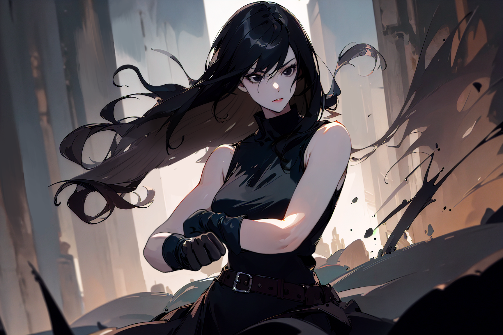
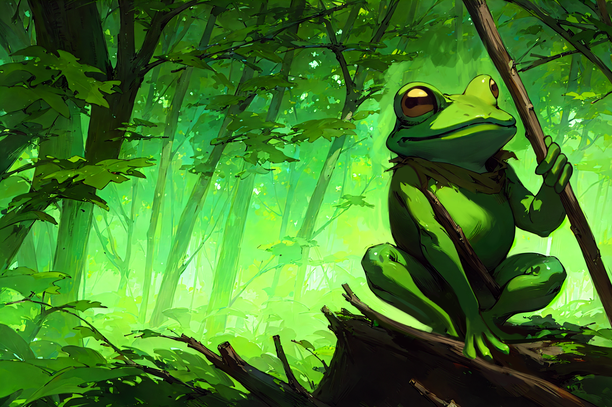
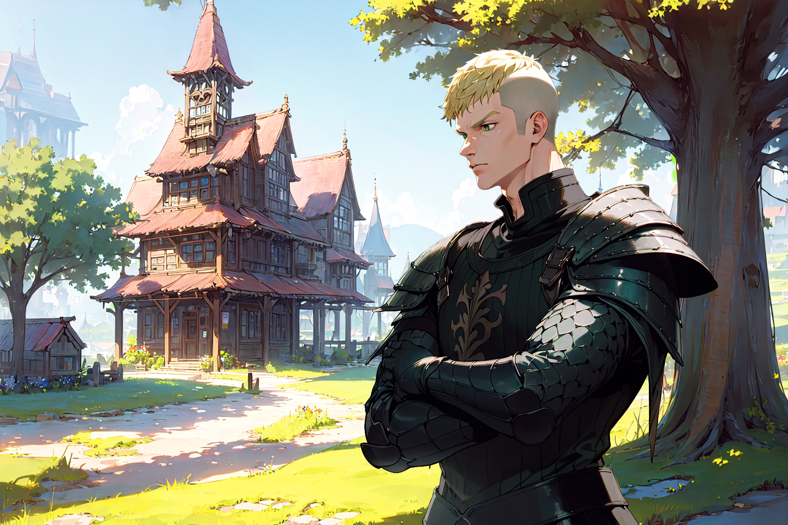
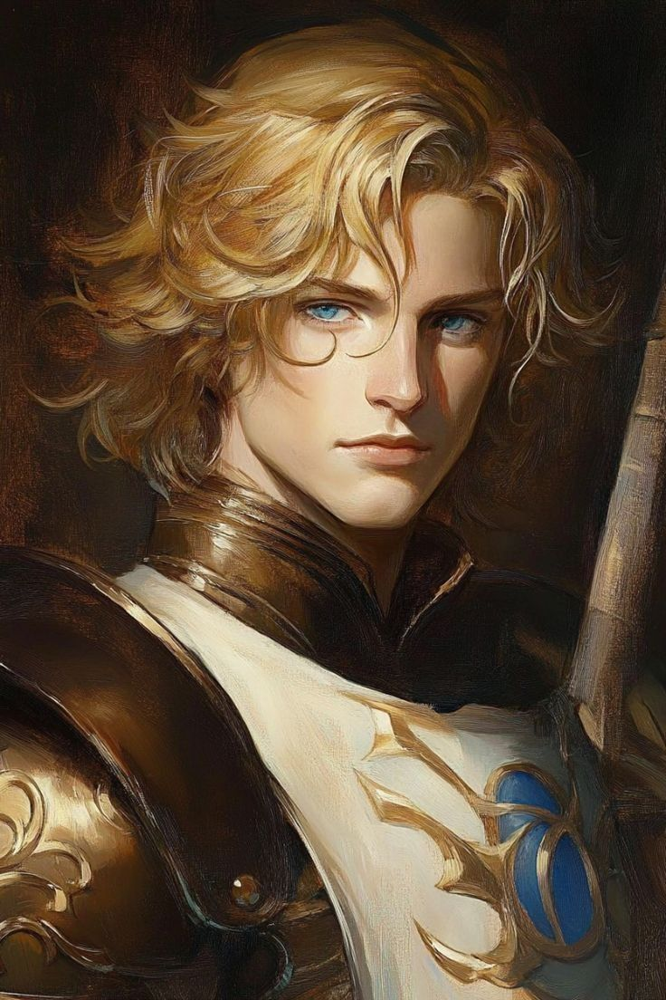

Ela chegou em nossas vidas como uma brisa calma antes da tempestade. Ahri.
Não esteve conosco por tanto tempo, mas foi o suficiente… para mudar tudo.
Mentora. Amiga. Talvez algo mais que meu coração ainda não teve tempo de entender.
E agora, nunca vai ter.
Hoje, ela morreu.
Na minha frente.
Para nos salvar.
Para me salvar.
Nós éramos fracos. Ela foi forte demais por todos nós. Quando o perigo veio,
ela enfrentou sozinha o que deveríamos ter enfrentado juntos. Eu tentei alcançá-la.
Tentei correr até ela.
Mas meus próprios companheiros me seguraram — braços e mãos me impedindo de lutar,
de falhar junto com ela. Eu vi. Eu vi o golpe final atravessar seu corpo… e no mesmo
instante, a escuridão. Alguém me apagou. Me apagaram. Para que eu fugisse.
Mas fugi de quê? De quem?
Hoje eu não sou nada além de uma covarde viva… enquanto ela, que tanto deu,
virou lembrança.
E a pior parte?
Eu nunca disse o que sentia.
E agora, nem mesmo a memória dela consegue me ouvir.
No Silêncio do Último Olhar
Personagens Citados

Taci
Taci... eu gritei... VOCÊ OUVIU?
eu gritei... eu sangrei... você não veio.
por que??
onde tava tua coragem??
você sabia... você SABIA como era perder...
e mesmo assim...
deixou ela morrer sozinha.

Marfim
Marfim.
seu nome é oco.
você é oco.
era só objetivo.
só sobrevivência.
e eu aqui, mastigando as lembranças, enquanto você busca conhecimento e segue em frente.

Kishimoshi
Família... é isso?
me quebrar.
me impedir.
me fazer assistir.
Kishi... você arrancou minha alma pra me salvar a carne.
eu não pedi.
eu não queria.
deixasse eu ter morrido, porra!

Nefilim
não esqueço teu rosto.
não esqueço o brilho da tua faca.
não esqueço a última respiração dela.
vou achar você.
e quando achar...
não vai ter julgamento.
só dor.
só escuridão.
só... esquecimento.
Ahri
Eu amava você.
De um jeito que nem eu sabia direito como explicar.
E eles me roubaram a chance de morrer lutando por você.
Eles me amarraram com suas boas intenções.
Eles me trancaram na vida enquanto você descia pro inferno sozinha.
Cada olhar deles pesa em cima de mim como correntes.
Taciane, Marfim, Kishimoshi...
Vocês me condenaram.
Ahri, me perdoe.
Me perdoe por não ter sido rápido o bastante.
Por não ter sido forte o bastante.
Por ter deixado que eles me afastassem de você quando mais importava.
Agora, eu carrego essa vida como uma punição.
E cada batida do meu coração é um insulto à memória do que eu sentia por você.